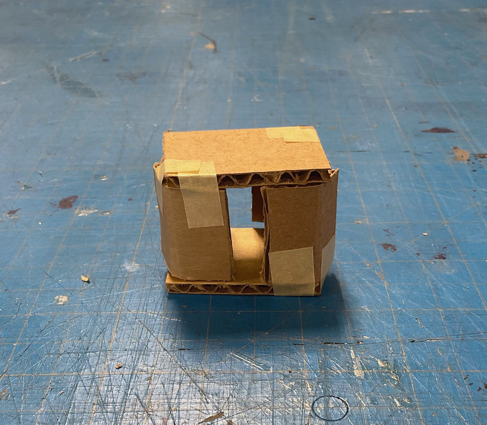

FALL 2021
AR2 CHAIR
WORK TYPE
CONTEXTintro to engineering: design
(ENGN32), brown university
TIME4 weeks, ~6 hours/week
in this design sprint-like project, we designed a chair for a
specific persona:
"Chris, 27 year-old data scientist, seeking a stackable minimalist chair with two or more functionalities (and people like Chris)"
"Chris, 27 year-old data scientist, seeking a stackable minimalist chair with two or more functionalities (and people like Chris)"
WORK TYPE
CONTEXTintro to engineering: design
(ENGN32), brown university
TIME4 weeks, ~6 hours/week
in this design sprint-like project, we designed a chair for a
specific persona:
"Chris, 27 year-old data scientist, seeking a stackable minimalist chair with two or more functionalities (and people like Chris)"
"Chris, 27 year-old data scientist, seeking a stackable minimalist chair with two or more functionalities (and people like Chris)"
IDEATION

using simple sketches, we each explored the problem on our own first.
a couple of my sketches (above) included flexible or sliding panels,
single hinges, or creative stacking.
from all the sketches, we brainstormed three categories of ideas:
MOTION/INTERACTION
> tipping
> sliding
> stacking
> bending
> tipping
> sliding
> stacking
> bending
ADDED FUNCTION
> desk or table
> storage
> cupholders
> lamp
> desk or table
> storage
> cupholders
> lamp
DESIGN/STYLE
> plastic/wire malleable chair
> bamboo foldable accordion
> simplistic box
> folding/collapsible back
> plastic/wire malleable chair
> bamboo foldable accordion
> simplistic box
> folding/collapsible back
REVISED PROTOTYPE

REVISED SKETCH
after a long discussion session, we combined the box and malleable panel chair ideas to make the concept above, a box when closed which unfolds to become a curved chair.
after a long discussion session, we combined the box and malleable panel chair ideas to make the concept above, a box when closed which unfolds to become a curved chair.
SKETCH VISUALIZATION
> both visualizations by addie clark
> both visualizations by addie clark


CAD MODELS
after an initial low-fidelity render to sort out the dimensions, a high-fidelity model accounted for interaction (handles), storage (drawer), and material (pine).
after an initial low-fidelity render to sort out the dimensions, a high-fidelity model accounted for interaction (handles), storage (drawer), and material (pine).
SUPPORT ISSUES
we needed a mechanism that could allow the supporting leg to collapse but also hold significant weight when locked.
the solution was a bar of pine which could rotate using hidden bearings. a finite element analysis showed the support could comfortably hold up to 300 pounds.
we needed a mechanism that could allow the supporting leg to collapse but also hold significant weight when locked.
the solution was a bar of pine which could rotate using hidden bearings. a finite element analysis showed the support could comfortably hold up to 300 pounds.

WITH MORE TIME...
the next step is pretty clear - a scale model prototype would be in
order!
ADDITIONAL INFO



BOX CUTTING
each team member made some quick prototypes to discuss as a group. cardboard and masking tape were my materials of choice. these explore the two-box model and flex-panel model with various supports and bracing.
each team member made some quick prototypes to discuss as a group. cardboard and masking tape were my materials of choice. these explore the two-box model and flex-panel model with various supports and bracing.
| box chair | malleable panel chair | folding chair | |
|---|---|---|---|
| minimalism | 5 | 3.5 | 4 |
| multifunctionality | 4 | 4 | 3.5 |
| feasibility | 4 | 2 | 2/5 |
| aesthetics | 3.5 | 5 | 4 |
| OVERALL | 16.5 | 14.5 | 14 |
PROTOTYPE MATRIX
the three major categories of prototypes were rated on four criteria. ultimately, a box-style chair was the highest scoring in minimalism, multifunctionality, and feasibility at the cost of aesthetics.
the three major categories of prototypes were rated on four criteria. ultimately, a box-style chair was the highest scoring in minimalism, multifunctionality, and feasibility at the cost of aesthetics.
DECISIONS WE MADE
below are the major decisions we made throughout the process.
below are the major decisions we made throughout the process.
| changes we made | importance | time of change |
|---|---|---|
| fluid chair → single motion | simplified movement with less failure points | prototyping - fluid design needed extra support to hold weight |
| bamboo → wood | more affordable and easier to buy necessary dimensions | bill of materials - bamboo is expensive and inconvenient to work with |
| solid → partially hollow | cost-saving without affecting structural integrity | sketching - allows for storage space |
| separate support → built-in support | no need for extra components | redesign - extra pieces are clunky and found a solution |
| quarter circle → quarter squircle curvature | makes sitting more comfortable | CAD model - not much flat space to sit |
NEEDS WE MET
below are the ways our chair addresses the initial user needs.
below are the ways our chair addresses the initial user needs.
| user need | how we met the need | |
|---|---|---|
| multifunctional | serves as a small table in "box mode" | storage drawer |
| storable | small footprint | stores as a normal box |
| stackable |
easy to stack and lift as a 2ft box; *technically* stackable in "chair mode" |
handles on both sides to help grip |
| minimalistic | almost all one material | single motion movement |
| fits an average human | curvature fits a standard sitting position | standard 18in seat-to-ground |
| easy to change functions | simple two-step conversion - unfold, then lock support | no additional parts |
| questions | insights |
|---|---|
| what are key characteristics of minimalistic design? |
> design emphasizes function > often monochromic > simple geometric shapes > raw materials (metal, plastic, wood, glass, stone) |
| what chair elements influence user experience and comfort? |
> back support, reclining to 100-110° angle > armrests if working, maintaining elbows at 90° |
| what multifunctional chair designs are on the market? |
> extra storage (most common!) > transform into other furniture, like table or bed > save space by nesting |
| what are standard chair sizes? |
> height - 18" to 23", floor to seat > width - 16" to 20" > back - 16" > depth - 15" to 17" > armrest - 5" to 8" high, 2" to 4" wide |
MARKET RESEARCH
getting back to the basics... what is a chair? we began with some market research to define our limits.
getting back to the basics... what is a chair? we began with some market research to define our limits.
TECHNOLOGY RESEARCH
how is engineering and technology implemented into a chair?
how is engineering and technology implemented into a chair?
| technology | insights |
|---|---|
| storage locations |
> open compartment under seat > drawer-like closed compartment under seat > rotating compartment under seat > armrest compartments |
| folding & collapsing |
> classic metal folding chair > tripod camping chair style > half-fold frame-and-canvas |
| electrics |
> lamp/lightbulb > heating or cooling |